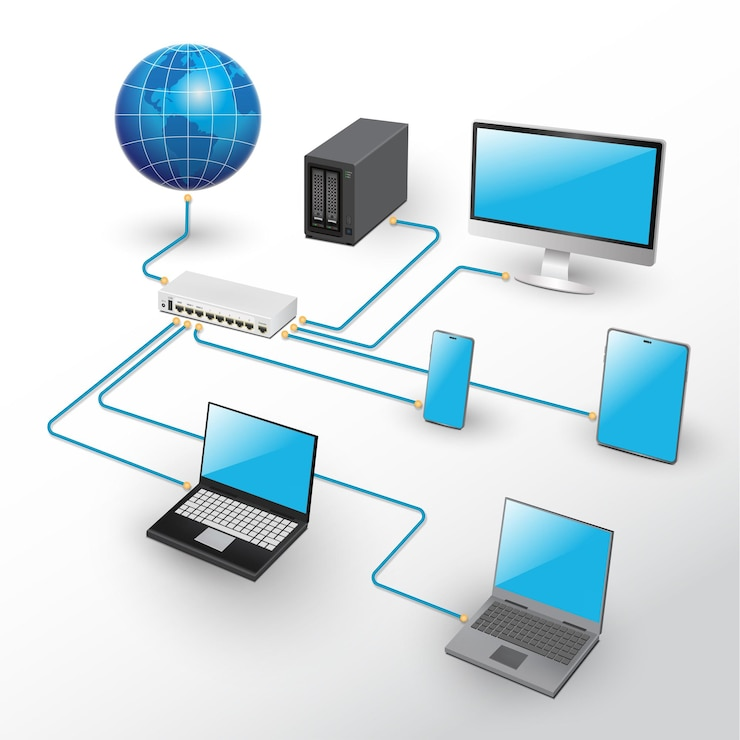

Les Réseaux Informatiques
Les réseaux informatiques permettent de connecter plusieurs ordinateurs et dispositifs afin qu’ils puissent échanger des données. Internet est le réseau mondial le plus connu. Les réseaux peuvent être classés en LAN, MAN ou WAN. Ils utilisent des protocoles comme TCP/IP pour assurer la communication. La gestion des réseaux est un pilier fondamental de l’informatique moderne.
Pour approfondir, visitez cet article détaillé sur les réseaux.
🌐🔗 Les réseaux informatiques : l’infrastructure invisible qui nous relie tous 🧠📡
Qu’il s’agisse de naviguer sur le web, d’envoyer un message, de jouer en ligne ou de stocker des données dans le cloud, tout passe par une chose : les réseaux informatiques.
Les réseaux sont comme les veines d’un corps numérique : ils transportent l’information, relient les systèmes, et permettent à la technologie de fonctionner à l’échelle mondiale. Sans eux, Internet ne serait qu’un rêve isolé sur chaque machine.
🔍 Pourquoi les réseaux sont-ils essentiels ?
- Parce qu’ils sont la base de la **communication mondiale**.
- Parce qu’un bon réseau garantit la **vitesse, la sécurité et la fiabilité** des échanges.
- Parce qu’ils permettent l’émergence de concepts puissants comme le **cloud, l’IoT ou encore les smart cities**.
- Parce qu’**optimiser, sécuriser et concevoir un réseau** demande une vraie expertise technique.
💡 Se spécialiser dans les réseaux, c’est comprendre les protocoles, les topologies, les infrastructures et la manière dont chaque paquet de données trouve son chemin dans ce vaste monde connecté.
🛠️ C’est aussi travailler avec des technologies comme TCP/IP, DNS, DHCP, VPN, VLAN, mais surtout avec une **logique rigoureuse et un œil attentif** aux détails et à la sécurité.
🚀 Dans un monde où tout est interconnecté, les experts réseaux sont les architectes de l’ombre, ceux qui rendent possible cette fluidité numérique que nous utilisons tous les jours sans même y penser.
🔁 Et toi, comment participes-tu à la construction de notre monde connecté ?
#RéseauxInformatiques #NetworkEngineering #InfrastructureNumérique #Internet #TCPIP #Connexion #Cloud #IoT #Technologie